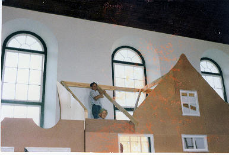

|
Indeks: |
Kan mens glo dat vyf-en-twintig jaar reeds verbygesnel het sedert die Henning Familiebond op 21 Julie 1984 gestig is. Op hierdie dag het 26 Hennings en hulle gades aan huis van Olivier Henning in Wierdapark, Verwoerdburg (tans Centurion) bymekaar-gekom, hoofsaaklik met die doel om 'n familiebond te stig.
Vier jaar vroeër, gedurende 1980, het Olivier begin om 'n Geslagsregister van die nasate van Peter Henrich Henning *1740, wat in 1765 na die Kaap van Goeie Hoop ge-emigreer het, op te stel. Teen 1984 het sy navorsing so 'n stadium bereik, dat hy sy resultate al wou publiseer. Hy het egter 'n familiewapen gesoek en dit het duidelik geword dat hierdie Henning familie slegs 'n wettige wapen kon kry as ons 'n familiebond stig en 'n wapen in die naam van hierdie familiebond by die Staatsheraldikus registreer.
Nou na vyf-en-twintig jaar lewe slegs 15 van die 26 stigterlede nog en al 15 is steeds betrokke by die familiebond. In hierdie vyf-en-twintig jaar het ons familiebond van krag tot krag gegaan en ontwikkel in een van die besgeorganiseerde familiebonde in die wêreld. Ons is baie dankbaar en trots op die prestasies wat ons behaal het en ons noem slegs 'n paar van die belangrikstes:
1. Die Familie-kroniek van al drie die Henning stamme in Suid-Afrika is opgestel en word voortdurend in stand gehou. Ongelukkig is alle boeke reeds uitverkoop, maar 'n pragtige laserskyf (CD) met die volledige familiekroniek is beskikbaar;
2. 'n Familiewapen vir die nasate van Peter Henrich Henning *1740 is by die Staatsheraldikus geregistreer. Ons is een van slegs 'n paar families in Suid-Afrika wat 'n geregistreerde familie-wapen het;
3. Nuusbrief. Oor die afgelope vyf-en-twintig jaar het daar elke drie maande 'n nuusbrief verskyn. Nuusbrief no 1 het gedurende Januarie 1985 verskyn, slegs ses maande na die stigting van die familiebond. Die feit dat elkeen van die 98 nuusbriewe, tot dusver op tyd verskyn het, is sekerlik 'n groot prestasie. Dit verg "hare op jou tande" om familie nuus te versamel en interessant aan te bied. Nuusbrief no 100 sal teen die einde van 2009 uitgegee word. Ons sal hierdie gebeurtenis ook herdenk en almal word nou reeds uitgenooi om bydraes te lewer;
4. Aandenkings. Ons het verskeie items, soos teelepels, suikerlepels, lapelwapens, mansjetknope, bierbekers, muurborde en skryfblokke laat vervaardig en verkoop dit sonder winsbejag aan ons lede. Ons wil maar weer 'n beroep doen op almal om ons in hierdie opsig te ondersteun. Ons het tans nog net voorraad van die volgende items beskikbaar: teelepels - R28.00 elk, lapelwapens - R20.00 elk, mansjetknope - R60.00 stel, A4 Skryfblokke - R24.00 - 50 bladsye, Henning Familiekroniek laserskyf (CD) - R120.00 elk;
5. Familie Feeste. Ons het drie landwye familiefeeste gehou, asook verskeie kleiner feeste. Al die feeste was suksesvol en is deur almal wat dit bygewoon het geniet. As mens al die werk wat ingaan met die organisering van sulke feeste in ag neem, was dit ongelukkig elke keer teleurstellend hoe swak die opkoms was.
Die grootste opkoms was met die 1988 landwye fees wat te Aliwal-Noord gehou is, toe 220 mense die fees van drie dae bygewoon het. Sal ons die opening-seremonie vergeet? 'n Optog bestaande uit 'n koets, gesleep deur 'n span van vier spierewit perde, 'n perdekommando van ongeveer 20 ruiters met Henning vlae en wimpels en 'n ossewa gesleep deur 'n span van agt Afrikaner osse het op Saterdagoggend 8 Oktober 1988 deur die strate van Aliwal-Noord beweeg en voor die sportsaal by die Aliwal Spa tot stilstand gekom. In die koets het die "jong" 80-jarige oom Len Henning, asook 'n Henning seun en dogter gery.
Ons het maar asem opgehou dat al die ruiters lewendig en heel by die eindpunt sou aankom, want daar was 'n hele paar stadsjapies wat nog maar net 'n paar keer (sommiges nog nooit!) op die rug van 'n perd gesit het nie. Om dan nou nog in 'n amptelike optog met 'n vlag of wimpel in jou hand te ry, was baie gevra. Wonder-bo-wonder het alles vlot verloop en het die optog veilig by die feesterrein aangekom.
Daar aangekom is die optog met trompetgeskal (deur vier lede van die plaaslike kadetorkes) en die sing van 'n Henninglied (wat spesiaal vir die geleentheid gekomponeer is) verwelkom. Oom Len Henning het hierna 'n amptelike Henning oorkonde op die podium aan die Burgemeester van Aliwal-Noord, Mnr Gawie Swart, oorhandig. Ons almal wat daar was, het gegloei van trots. Ons onthou ook dat Staatspresident P W Botha en die Administrateurs van Transvaal, Vrystaat en die Kaap-Provinsie gelukwense aan die Henning familie met hierdie pragtige fees gestuur het.
6. Radio. Ons het die Henning familie verskeie kere oor die radio bekendgestel. Die belangrikste geleentheid was sekerlik 13 Junie 1988 toe die hele land vir amper 'n uur lank aan die Henning familie behoort het, tydens die program "Dis my van".
7. Familie Museum. Ons is baie trots op ons familiemuseum, wat deel van die Aliwal-Noord dorpsmuseum uitmaak. Gedurende 1987 reeds het Bondsekretaris, Olivier Henning met onderhandelings met die munisipaliteit begin. Ons gedagte van 'n familie museum het mooi ingepas by hul planne vir die dorpsmuseum en het die stadsraad gevolglik goedgekeur dat die Henning - en De Wet familiemuseums inskakel by die dorpsmuseum. Die beplanning van die fasade en uitstalling het 'n paar jaar geduur. Daar is besluit dat die fasade 'n replika sal wees van die tweede huis wat ongeveer 1850 op die plaas Damfontein gebou is. Die 83-jarige oom Len Henning, wat self in 1908 in hierdie huis gebore is en groot geword het, het by sy huis in Brakpan begin om so 'n fasade te bou. Gedurende November en Desember 1991 het oom Len, asook Olivier- en Mauritz Henning, onderskeidelik van Verwoerdburg en Pretoria-Noord, Aliwal-Noord toe gereis om die fasade te gaan aanmekaarsit. Olivier was ook verantwoordelik vir die tema en uitstalling van al die uitstalitems.
|  |
Ons moet onthou dat die meerderheid Hennings voor en tydens die Anglo-Boere-oorlog in die Vrystaat en Transvaal gewoon het. Hierdie mense het alles gedurende die oorlog verloor en kon ons werklik net uitstal items van die paar Kaap Kolonie Hennings - veral die Aliwal Hennings, kry.
Die naweek van 4/5 April 1992 het ons ons uitstalling ingewy. Verskeie eregaste, waarvan die belangrikste sekerlik Burgemeester Gawie Swart was, het saam met meer as 60 Hennings die inwyding bygewoon.
Sedert 1994 kry die wonderlike mense wat die Aliwal museum beman - veral mev Madeleine Joubert, wat almal vrywilligers is, geen samewerking van die munisipaliteit nie en oorleef die museum maar net op genade. Ongelukkig huldig die nuwe amptenare van die munisipaliteit die standpunt dat museums in die algemeen en die Aliwal museum in die besonder, maar net "witmens goed" is, wat maar tot niet kan gaan. Hierdie standpunt is ten spyte van die feit dat die Aliwal museum 'n hele afdeling het wat die geskiedenis van die plaaslike swart mense uitbeeld. Bondsekretaris, Olivier Henning het ook 'n pragtige geraamde portret (die enigste wat bestaan) van die baie bekende Xhosa-opperhoof, Kreli (1818 - 1893) aan die museum geskenk. Hierdie foto is gedurende die 1880's deur 'n familielid geneem. Die oorspronklike foto is vandag nog in Olivier se besit.
Die Henning Familiebond gee jaarliks 'n klein donasie aan die Aliwal museum (2008 - R1000.00) om dankie te sê vir die voorreg om ons uitstalling daar te huisves. Alle donasies word aangewend om die museum in stand te hou. Ongelukkig weet ons nie wat die toekoms vir ons museum inhou nie. Ons kan maar net hoop dat insig by die munisipaliteit sal seëvier.
8. Internet. Op 28 Junie 1997 het die Henning Familiebond sy verskyning op die Internet gemaak. Jannetta Steyn, dogter van Leonie Steyn (gebore Henning) wat in Durham, Engeland woon, het op haar eie koste 'n webwerf vir die Henning familie ontwerp. Met insette van Bondsekretaris, Olivier Henning kon sy hierdie webwerf opstel en sodanig uitbrei dat dit vandag die primêre bron van inligting vir alle Hennings wêreldwyd geword het. Selfs die geslagsregisters van twee Duitse, een Nederlandse - en een Estoniese Henning stam word ook op ons webwerf vertoon. Olivier voorsien haar voortdurend van alle nuwe gegewens wat bygevoeg of gewysig moet word. Besoek gerus gereeld hierdie webwerf by www.henning.org of skryf vir Olivier by olie4@henning.org of vir Jannetta by jannetta@henning.org
Beursfonds. Slegs een van die doelwitte van die familiebond - die daarstelling van 'n beursfonds waaruit beurse aan belowende Henning studente toegeken kan word - is nog nie bereik nie. Hoewel dit op die oog af lyk of hierdie doelwit nie bereikbaar is nie, weens die groot kapitale bedrag wat nodig is om so 'n fonds in stand te hou - minstens R500 000.00 - is ons van mening dat dit wel bereikbaar is as alle Hennings die erns van die saak besef. 'n Beroep word op alle Hennings (veral diegene wat geen nasate het nie) gedoen om hierdie beursfonds te onthou wanneer hulle hul testament optrek. Miskien nie gou nie, maar dalk bereik ons hierdie doelwit in die langtermyn.
Ledetal. Gedurende die eerste vyftien jaar het die familiebond se ledetal voortdurend gegroei tot 'n hoogtepunt van ongeveer 250 families en individue. Daarna het ons getalle stadig begin afneem weens sterftes, bedankings en lede wat verhuis sonder om ons van hulle nuwe adres te verwittig. Ons het ook baie jare laas 'n groot werwingspoging gehad, veral weens die feit dat dit deesdae so moeilik is om goeie adreslyste te bekom. Tans is ongeveer 180 families lede van die familiebond, hoewel minder as 100 finansieël bydra.
Finansies. Ons finansies hou darem nog kop bo water. Met goeie finansiële bestuur klop ons boeke elke jaar. Die stelsel waar ons dit aan lede oorlaat om self te besluit hoe groot bydrae hulle elke jaar kan of wil maak, werk baie goed. Sommige jare word ons verplig om groot kapitale uitgawes aan te gaan, wanneer toerusting vervang moet word, maar dit gebeur gelukkig nie elke jaar nie. Dit is so dat 'n groot persentasie van ons lede geen bydraes lewer nie, maar met diegene wat ruimskoots bydra kom ons elke jaar die mas op. As daar surplus fondse is, word dit in ons reserwe (beurs-) fonds gehou totdat dit benodig word. Ons kan trots wees op die lede van ons familiebond.
Bestuur. Vir die afgelope 11 jaar is die bestuur van die familiebond in die Wes-Kaap gesetel. Gideon Henning van Strand is die Voorsitter en Olivier Henning is steeds die Bondsekretaris. Diegene wat dalk met die Voorsitter wil kommunikeer, Gideon se adres is Kaldenstr 12, Strand, 7140. Sy telefoonnommer is 021 853 3378. Olivier, wat die afgelope 25 jaar bondsekretaris was, se gesondheid is tans nie na wense nie en het reeds 'n paar noue ontkomings gehad. Hy het egter reeds twee Henning jongmense geidentifiseer om sy taak as bondsekretaris oor te neem. Rudolf Henning van Oak Glen, Bellville sal as die "genealoog" beheer oor die familiekroniek oorneem en sy suster, Cornelia van Kuilsrivier sal die sekretariële pligte van die Bondsekretaris oorneem.
Ons familiebond gaan beslis die volgende 25 jaar met entoesiasme, trots en ywer tegemoet.

Op Saterdag 30 Mei 2009 vind daar weer 'n genealogie- en erfenisfees by die Voortrekkermonument in Pretoria plaas en die Henning Familiebond sal, soos gewoonlik, daar verteenwoordig word. Gideon Henning, Voorsitter en Olivier Henning, Bondsekretaris sal die familiebond verteenwoordig. Die verrigtinge duur die hele oggend van 09:00 tot 13:00 uur. Alle Henning word hartlik uitgenooi om hierdie fees by te woon. Aangesien die datum so naby aan die verjaarsdag van die familiebond is, beplan ons om 'n eie Henning fees sommer daarna - die hele middag - te hou. Daar sal 'n teetuin en eetstalletjie beskikbaar wees, maar bring gerus 'n piekniekmandjie en 'n kampstoel of twee saam, sodat ons sommer daar op die terrein 'n lekker Henning fees kan hou. Propageer asseblief hierdie fees by al u familie en ander Hennings waarmee u kontak het. Onthou dit is ons familiebond se 25 ste verjaardag! By die ingang van die Monument terrein is 'n toegangsfooi van R15.00 per motor betaalbaar.

Baie dankie aan al die lede wat oor die afgelope drie maande hul bydraes vir ons aangestuur het. - veral diegene wat ruimskoots bygedra het, asook Jan Henning van Glenstantia, Pretoria en Henning Pieterse van Rietvalleipark, Pretoria wat volhou om maandeliks per debietorder by te dra.
Ons noem graag die name van lede wat oor die afgelope drie maande R200.00 of meer bygedra het:
Mnr WP (Werner) Henning van Cresta, Johannesburg - R350.00
Mnr PB (Pieter) Henning van Sinoville, Pretoria - R300.00
Mev JAD (Hannetjie) Henning van Doornpoort - R200.00
Mnr JJ (Japie) Henning van Roodepoort - R200.00
Mev W (Wiena) Wilkinson van Paarl - R200.00
Dr MEJ (Tjol) Henning van Centurion - R200.00
Mnr JC (Jacobus) Henning van Noordstad, Bloemfontein - R200.00
Mnr PH (Pieter) Henning van Durbanville - R200.00
Mnr NJ (Nico) Henning van Die Wilgers, Pretoria - R200.00

Dit is met leedwese dat ons verneem het van die afsterwe van b1.c3.d10.e10.f4.g2. Pieter Henning *7-7-1947 op 8 Februarie 2009. Pieter het, soos sy vrou, Ansie, die stryd teen kanker verloor. Sy begrafnis het plaasgevind op 12 Februarie 2009 vanuit die Gereformeerde Kerk Alkantrand, Pretoria.
Pieter het vir baie jare gedien op die bestuurskomitee van die Henning Familiebond en was 'n ware steunpilaar.
Ons meegevoel gaan uit na Pieter se drie dogters, Melanie, Zelna en Ilse en hulle families, asook Pieter se ma, tannie Albertina Henning van Sederberg Aftree-oord, Pretoria

Ons het die volgende brief van b6.c3.d3.e4.f1.g1.h2.i3. Annemarie Botha (gebore Henning wat in Kanada woon en die Henning webwerf op internet besoek het, ontvang:
Ons het Kanada toe gekom in 1998. Waar ons gewoon het in Garsfontein, Pretoria, was daar soveel inbrake en was spesifiek my lewe 2 keer erg in gevaar, en omdat ons gevoel het dat ons kinders nie 'n goeie toekoms het in SA nie, het my gewese man begin soek vir werk oorsee. Hy het 2 aanbiedings gekry, een in Amerika en een van Kanada. Ons het toe besluit om Kanada te kies. Ons het gekom met hom wat 'n werkspermit het en omdat ons nie "landed immigrants" was nie, kon ek glad nie werk hier kry nie. Dit het regtig baie lank gevat om aan te pas, maar mettertyd het ons landed immigrant status gekry en ek en die kinders was laasjaar ingesweer as burgers van Kanada.
Maar ons is nou gevestig en my kinders het hier grootgeword, hulle was onderskeidelik 11, 4, 3 toe ons gekom het en nou is hulle 21, 15, 14. Maar ek moet erken dat ek nog steeds baie keer huis toe verlang, veral as die winters hier so koud is en dit so baie sneeu. Maar ek dink nie dat ons ooit permanent sal teruggaan Suid-Afrika toe nie. Suid-Afrikaners stroom nog steeds hiernatoe en ons is nou al 'n klein gemeenskappie hier.
Twee ander interessante briewe wat ons uit die buiteland ontvang het, maar waar ons nie kon help nie, is die volgende:
1. Hello, my name is Chris(topher) Johnson. My mother Jutta Henning is from Greifswald Germany, born in 1938. Her father's name was Bruno Zahn Henning, and her mothers name was Hausangestellte Irmgard Minna Anna Henning. She was taken to a consentration camp around 1940, and never heard from again. My question would be, how would I trace information on where she went and what happened?
Ons het hierdie brief na Prof Peter Henning in Duitsland verwys.
2. In researching my husband's family I found the name Maria Henningsdtr, meaning daughter of Henning, married to Jacob Pedersen (of Sunde, born 1739 and died 1797) married 1789 in Hustad church in Norway. Irene Crossland.
Ons het hierdie variasie van die naam nog nie ondersoek nie, maar sal een dag daarby uitkom

Ons het verneem dat b1.c6.d3.e9. f4.g2.h1. Johan Henning (noem-naam Jay) *18-10-1975 op 14 Februarie 2009 in die huwelik getree het met Melanie Desiree Dobson van Winston Salem in die Verenigde State van Amerika. Sy is die dogter van Randolph Dobson en sy vrou Andrea (gebore Wentling). Johan is die seun van wyle Johannes Stephanus Henning *1-5-1945 en sy vrou Kathryn Edith (Kathy, gebore Hansen). Die huwelik-seremonie het plaasgevind by die Uiterwyk Landgoed in die Stellenbosch distrik.